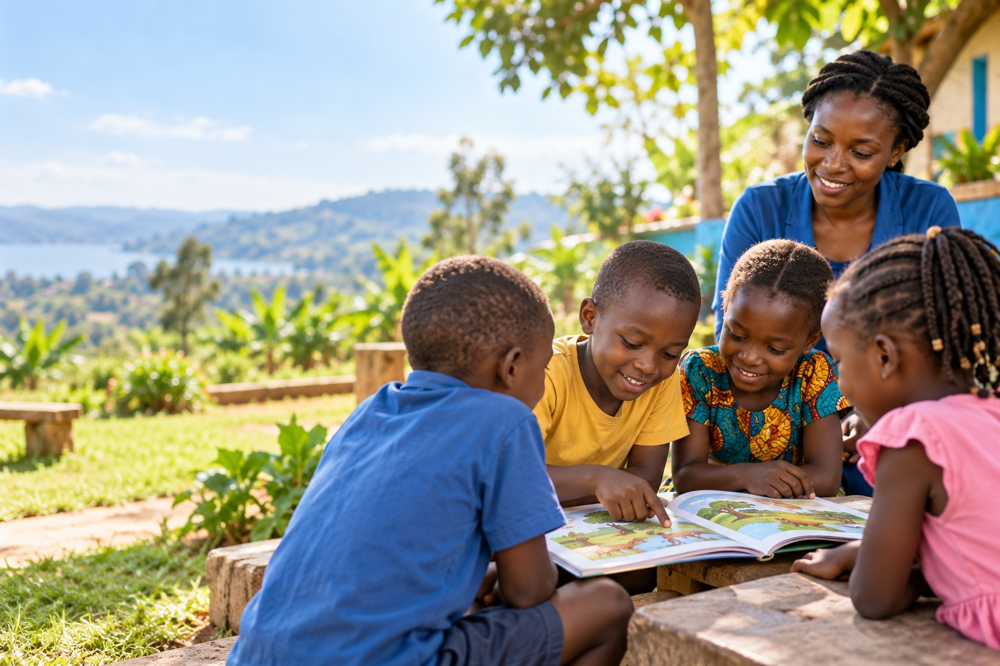
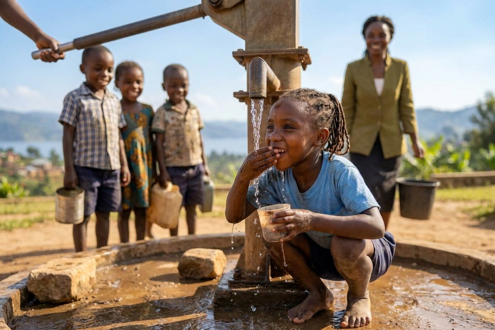
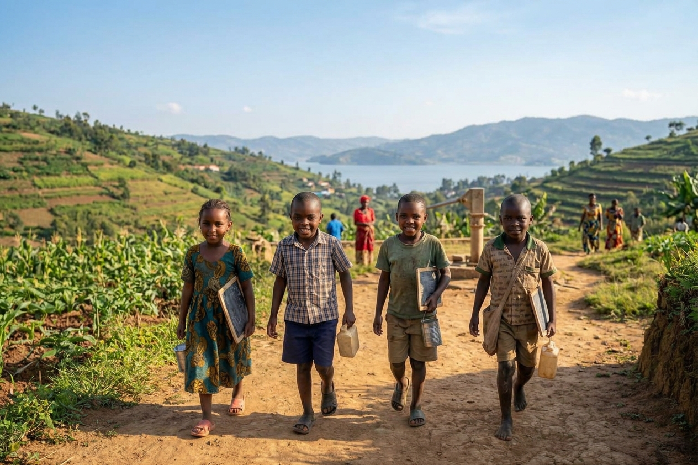

"Now reading time is part of our week."
Caregiver quote: "The reading circle gives us a reason to learn together at home." — caregiver, Wakiso District.
Save the Child Uganda works alongside families and communities to help children access learning, care and opportunities for a brighter future.
Your donations support learning materials, facilitate training and community sessions.
Measurable results from our community programs in our first year of operation.
children took part in reading circles during our first year.
community reading groups hosted monthly sessions across Wakiso, Mukono and Jinja districts.
% of participating caregivers reported improved access to learning support for their children.
In one year of operation, Save the Child Uganda has reached hundreds of children and caregivers across Central Uganda through community-led programs.
districts served: Wakiso, Mukono and Jinja.
community centers hosting safe space activities in Central Uganda.
year of community-led support for children’s learning and wellbeing.
Figures reflect our first year of operation. Contact us for detailed program reports.
Stories from children, caregivers and volunteers across our first year of work in Uganda.

Caregiver quote: "The reading circle gives us a reason to learn together at home." — caregiver, Wakiso District.

Families gathered for a community reading day in Wakiso District, bringing together parents, children and volunteer facilitators.

New reading circles opened in early 2026 across Mukono and Jinja districts, reaching more children with learning support.